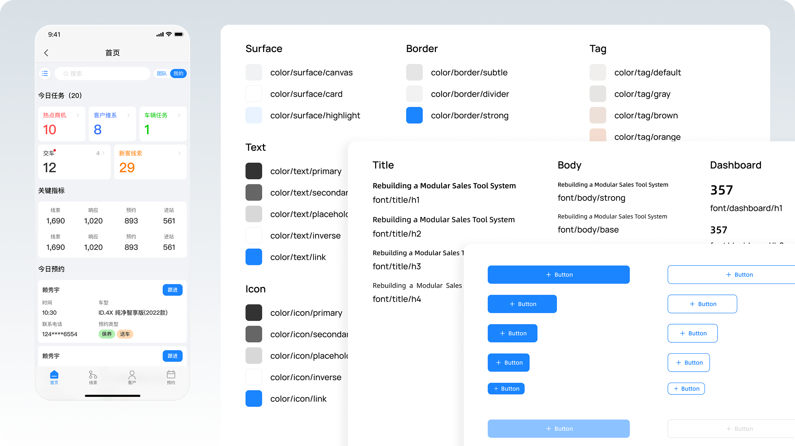
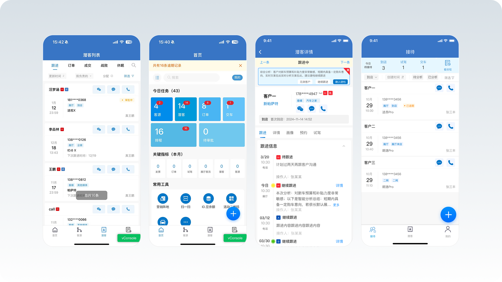
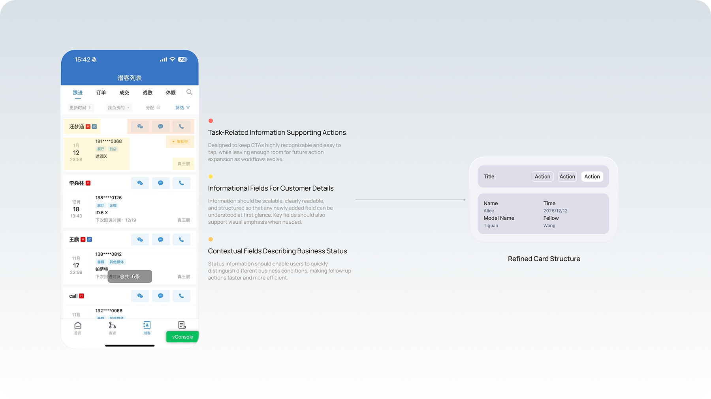
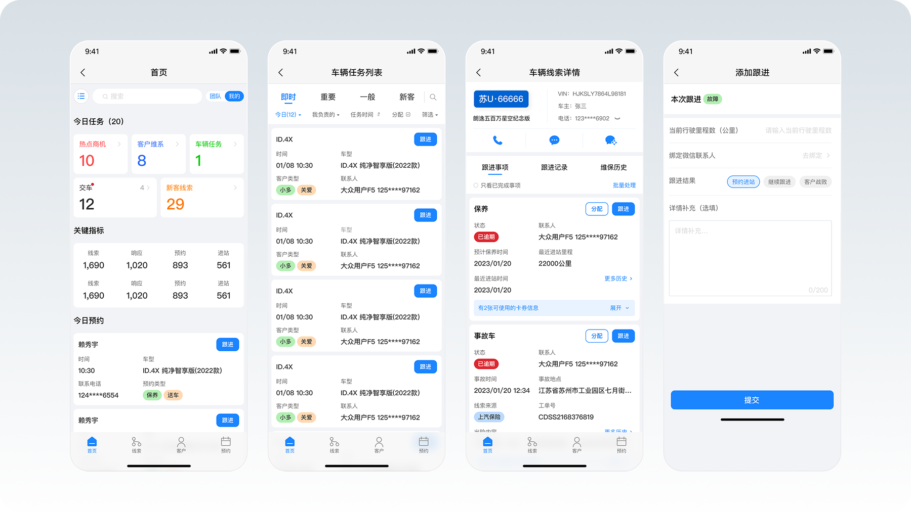

Restructuring a WeCom-based sales tool to improve efficiency and scalability in complex frontline workflows.

This project optimized a WeCom-based sales tool used by frontline advisors to manage customers, orders, and appointments. As new features were gradually added, the interface became cluttered and inconsistent. Instead of redesigning the system, the goal was to reorganize the structure and establish clear rules that could support future expansion.
The goal was to establish a scalable UI structure that could evolve with business growth by restructuring the homepage hierarchy, defining a unified component system, and enabling developers to extend new features independently within clear design rules.
Growing Business Complexity
As sales processes and modules expanded, the system’s complexity increased significantly. Leads, customers, orders, deliveries, and appointments were layered onto the same interface, with new features often added as additional fields, cards, or entry points. Over time, the tool evolved from a focused sales assistant into a cluttered interface overloaded with information.
Lack of a Unified Information Structure
On the list and detail pages, information was arranged loosely within cards, with no consistent structure between fields and no clear emphasis on key states. While manageable at smaller scales, the growing number of fields quickly reduced readability, forcing sales advisors to spend more time interpreting information and making future expansion increasingly difficult.
Lack of Scalable UI Rules
With no dedicated UI support, many interface changes in later iterations were implemented directly by developers. Without clear component rules or information structures, new features were often added wherever space allowed, causing the interface to drift over time. The key challenge was not only to improve clarity, but to establish scalable UI rules that developers could consistently follow as the system evolved.

From a business perspective, I first mapped the core information types used by sales advisors. Page content was grouped into three categories:task-related actions for operational buttons and next-step triggers, informational fields for business and customer details, and status indicators for at-a-glance progress, intent, or processing state. After defining these categories, I analyzed the homepage, list, and detail pages. While the homepage structure was largely stable, the list and detail pages showed inconsistent field layouts, unclear hierarchy, and poor scalability. As a result, the focus shifted from redesigning pages to standardizing how information is structured and presented.
Principle 1 — Preserve Structure, Improve Readability
The homepage structure remained unchanged to avoid disrupting existing workflows. Instead, visual noise was reduced by limiting colors and strengthening hierarchy, making the interface cleaner and easier to scan.
Principle 2 — Standardize Information with Key–Value
List and detail pages were reorganized into a Key–Value structure, clarifying field relationships and creating a stable pattern for adding new data without redesigning layouts.
Principle 3 — Highlight Key States with Tags
Important information such as source, intent, or status was presented as tags, enabling faster scanning and recognition compared to plain text.
Principle 4 — Create Extendable Component Rules
Reusable patterns—information area, tag area, and action area—were defined so developers can extend features within existing structures while maintaining interface consistency.


Homepage Optimization (Task-Oriented Homepage)
The overall homepage structure remained unchanged, with improvements focused on visual hierarchy. By reducing excessive colors, minimizing decorative noise, and strengthening separation between modules, the interface became cleaner and easier to scan. Task information, metrics, and tool entries are now more clearly distinguished, improving readability while preserving existing user habits.
Structured List Page
The list page underwent the most significant changes. Previously, customer information was scattered across cards without a consistent structure, making it difficult to read and expand. In the redesign, key information was reorganized into a Key–Value layout, creating clearer relationships and a more predictable reading flow. Important attributes such as source or status were converted into tags, allowing sales to quickly identify key information while scanning the list. This approach improves both readability and future scalability.
Clear Detail Page Hierarchy
The detail page follows the same structure as the list page, using a Key–Value layout for core information and tags to highlight key states. This consistency allows users to move from list to detail without adjusting to a new reading pattern. Information grouping and action placement were also stabilized, keeping the page clear even as more business data is added.